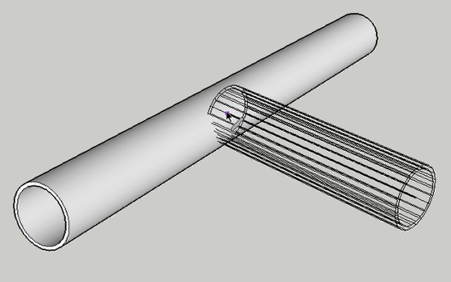
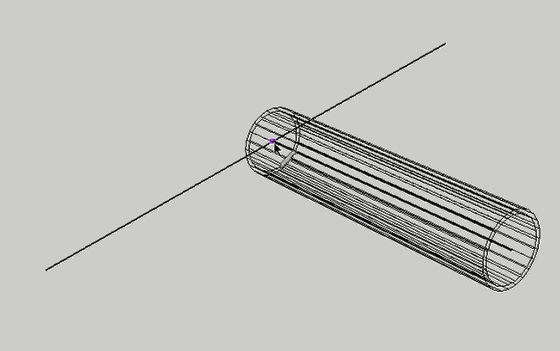
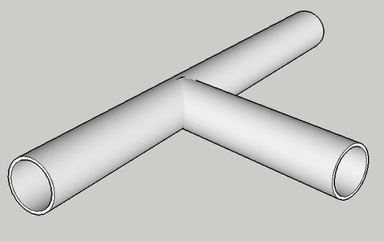
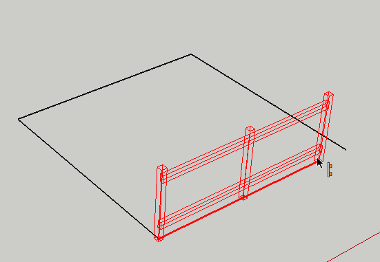
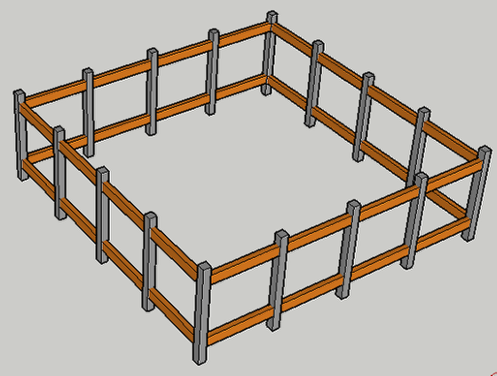

In order to connect Profile Members precisely, use PMPI.
Activate PMPI within a tool by hovering the cursor over a Profile Member and presssing the CTRL button (Windows) or OPTION (Mac).

After activating PMPI, the Profile Member will be temporarily replaced by its path so you can inference to the path.
In the example above, PMPI is used to connect two pipes at their centerlines.


PMPI can be used when building an Assembly.

A common use of PMPI is to make it easier to draw a closed path.